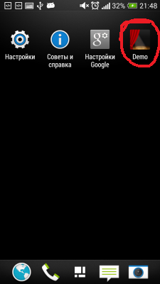
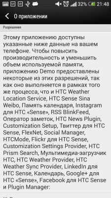
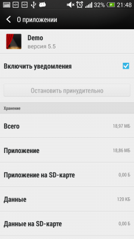
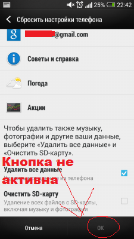

Данный файл превратит ваше устройство в демонстрационный образец, как на витрине. Все сторонние приложения исчезнут, система примет вид стоковой прошивки, как будто только после установки. При этом в системе будут демо контакты , демо расписание событий в календаре и т.д. На экране во время простоя устройство будет прокручиваться анимация возможностей устройства. Яркость будет заблокирована на максимальном уровне. Часть настроек устройства станет неактивной...
Самое отвратительное то, что штатными средствами систему не сбросить к заводским параметрам, так как в соответствующем меню неактивна клавиша подтверждения действия сброса (т.е. OK). Возвратить телефон в исходное состояние поможет только вайп, осуществляемый из рекавери (стокового или кастомного).
Также прилагаю скриншоты, для того чтобы вы поняли, что это за приложение:



